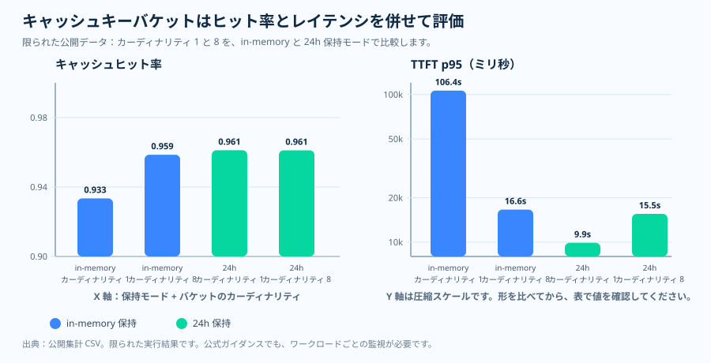

運用エッセイ · プロンプトキャッシュとルーティングのヒント
キャッシュキーはラベルではなくルーティングのヒント
チームが prompt_cache_key を配線すると、ほかのラベルと同じように
扱いたくなります。自然な反射は、呼び出しを一意にタグ付けするもの——
request_id、ユーザーの質問テキスト、タイムスタンプ、あるいは
テナント単位やユーザー単位の十分に細かい軸——を詰め込むことです。しかしこの
フィールドはラベルよりも運用に関わります。プロンプトのプレフィックスハッシュと
組み合わされ、一致する処理がどこにルーティングされるかに影響するからです。
だからキーを特異にしたい本能は、本記事が問う運用上の問いに真正面からぶつかります
——より一意なキーは再利用を集めるのか、それとも共有プレフィックスが稼ごうとした
キャッシュの局所性を断片化させるのか。
prompt_cache_key は、繰り返しの処理を一つのマシンへルーティング
します。そして Microsoft Learn は、バケットあたり 1 分あたり約 15 リクエスト
という目安を文書化しており、それを超えるとキャッシュの有効性が下がりうると
しています。1枚要約はその一つのメッセージ——文書化された上限の下にとどまる
ようにバケットをサイジングする——を運び、境界を示します。上限は公式仕様で
あり、その隣のヒット率とレイテンシの形は、従量課金で測定したサニタイズ済みの
公開集計を記述的に示したものです。
キャッシュキーのバケット分割の1枚要約 SVG を開く。

なぜキーを推測ではなくサイジングするのか
一意キーの反射は、特異性はタダだと仮定します——細かいキーはリクエストを区別
する助けにしかならない、と。それを受け入れる前に、二つのことを並べておく価値が
あります。一つ目は Microsoft Learn が文書化していることです。プロンプト
キャッシュはキャッシュの対象になるために同一の早期プレフィックスを必要とし、
prompt_cache_key はプレフィックスのハッシュと組み合わされて、
繰り返しの処理がどこに着地するかを誘導します。同じドキュメントは、ある目安——
一つのプレフィックス＋キーの組み合わせで 1 分あたり約 15 リクエスト——を示し、
それを超えるとトラフィックが追加のマシンへあふれ、キャッシュの有効性が下がり
うるとしています。二つ目は、本リポジトリのソース実行から取った疎なサニタイズ
済みの公開集計で、同じプレフィックスをより多くのバケットに分けたときにキャッシュ
ヒット率と初回トークンのレイテンシが実際にどう動いたかを記述的に示すために
含めています。
立ち止まる価値があるのは、その対の部分です。ヒット率だけを見ると安心材料に 読めますが、その下では体験が動いています。この断面では、バケットのカーディナ リティが上がってもヒット率は高くおおむね横ばいのままだったので、それだけを 読めば分割はコストゼロに見えてしまいます。初回トークンのレイテンシの裾が、 もう半分の物語を語ります——一つの熱いバケットが非常に大きな p95 を抱え、 トラフィックがより多くのバケットに広がると急に下がりました。だから運用上の 問いは「キャッシュはヒットしたか」ではなく、「各バケットは、一つのバケットが 熱くなりすぎることなくプレフィックスが局所性を保てるサイズか」です。プレフィックス ハッシュによるルーティングと約 15 リクエスト毎分のおおよそのオーバーフロー 地点は Microsoft Learn が文書化しているものです。バケット数の計算と、レイテンシの 隣に置いた公開のヒット率の断面は、本リポジトリが擁護する運用上の推論とソース 実行の根拠であって、普遍的なキャッシュヒット曲線ではありません。下のチャートが その対を明示します。
問い
共有プロンプトプレフィックスは、キャッシュキーのバケットをいくつ使うべきか?
根拠
Microsoft Learn がルーティングのヒントとおおよそのオーバーフロー地点を定義し、本リポジトリが疎な公開測定を追加します。
判断
ワークロード単位でバケットを分け、バケットあたりのレートをリスクゾーンより低く保ち、ヒット率と最初のトークンまでの遅延を監視します。
公式の挙動 · キーが変えるもの
キャッシュは同一のプレフィックスから始まる
Microsoft Learn によれば、プロンプトキャッシュには少なくとも 1,024 入力トークンが 必要で、最初の 1,024 トークンが同一でなければなりません。最初のプレフィックスは ルーティングのためにハッシュ化され、最初の 1,024 トークン以降は 128 トークン刻みで 追加のキャッシュ一致が発生します。最初の 1,024 トークン内に 1 文字でも違いがあると、 キャッシュヒットがミスに変わる可能性があります。
まずプレフィックス
繰り返される指示、スキーマ、ツール、例を前方に置きます。プレフィックスが変わると、後方の再利用は役に立ちにくくなります。
次にキー
prompt_cache_key はプレフィックスハッシュと組み合わされ、繰り返し処理のルーティングに影響します。
保証はない
キーは再利用の確率を高めますが、ヒットを約束するものではありません。運用上のヒントとして扱ってください。
サイジング · バケットをリスクゾーンより低く保つ
バケットが 1 つでは熱くなりすぎ、多すぎると冷たくなりすぎる
Microsoft Learn はおおよそのオーバーフロー地点を説明しています。同じプレフィックスと
prompt_cache_key の組み合わせが 1 分あたり約 15 リクエストを超えると、
一部のリクエストが追加のマシンにルーティングされ、キャッシュの有効性が低下する
可能性があります。実用的なサイジングのルールは、共有プレフィックスを、各バケットが
余裕をもってそのリスクゾーンより下にとどまるだけの安定したバケットに分割することです。
バケット数のルール
common_prefix_rpm = common_prefix_tps × 60
minimum_buckets = ceil(common_prefix_rpm / 15)
recommended_buckets = ceil(common_prefix_rpm / target_rpm_per_bucket)
計算例
1.4 TPS のとき、共通プレフィックスは 84 RPM になります。15-RPM の下限なら 6 バケット、10-RPM の目標なら 9 バケットです。
なぜ 1 つではだめか?
1 つの熱いバケットは、見えているプロンプトが安定していても、ローカルキャッシュ経路をオーバーフローさせる可能性があります。
なぜ一意ではだめか?
呼び出しごとに一意のキーを使うと、再利用が蓄積されません。キャッシュが再利用を積み上げる機会そのものがありません。
観測された根拠 · 疎な公開スライス
ヒット率と遅延を一緒に測定する

in_memory と
24h、それぞれ N = 960 レコード。これは二系列の折れ線グラフ
であって、度数のヒストグラムではありません。 読み方： この
バケットあたりレートの低い断面では、カーディナリティが上がってもヒット率は
高くおおむね横ばい（約 0.93〜0.96）でした。だからプレフィックスをより多くの
バケットに分けること自体が、ここでヒット率を崩したわけではありません——
断片化のコストは、このパネルではなく次のパネルのレイテンシの裾に現れました。
根拠の境界： 一つのテナントとリージョンで従量課金の gpt-5.2 で
測定した、疎なサニタイズ済みの公開集計（PTU ではありません）。記述的であり、
普遍的なキャッシュヒット曲線ではありません。 出典： 値は本
リポジトリの results/cache-key-bucketing/cache_hit_ratio_vs_cardinality.csv
から来ています（ソース CSV）。

in_memory
バケットは非常に大きな p95（約 106,000 ms）を抱え、トラフィックが 8 バケットに
広がると急に下がりました（約 16,600 ms）。一方 24h 系列は終始
低いままでした——だからこの断面ではバケット分割のコストはレイテンシの裾に着地し、
それゆえヒット率は単独ではなく初回トークンのレイテンシの隣で読む必要があります。
根拠の境界： 従量課金の gpt-5.2 での同じ疎なサニタイズ済み公開
集計（PTU ではありません）。記述的であり、レイテンシの保証ではありません。
出典：
results/cache-key-bucketing/ttft_p95_vs_cardinality.csv
（ソース CSV）。

| 保持 | カーディナリティ | ヒット率 | TTFT p95 | バケットあたり RPM |
|---|---|---|---|---|
| in-memory | 1 | 0.9334 | 106,389.96 ms | 30.65 |
| in-memory | 8 | 0.9586 | 16,623.66 ms | 4.00 |
| 24h | 1 | 0.9612 | 9,899.74 ms | 30.73 |
| 24h | 8 | 0.9612 | 15,549.08 ms | 4.00 |
これが証明するものとしないもの
この公開スライスは、普遍的なしきい値曲線を証明するものではありません。ただし、 運用者がヒット率だけを見るべきでない理由は示しています。保持モード、バケット レート、最初のトークンまでの遅延は、いずれもユーザー体験を左右します。
キー設計 · 安定したワークロードバケット
呼び出し単位ではなく、ワークロード単位でバケットを分ける
良いキーは、同じワークロードに対して決定的であるべきです。悪いキーは呼び出しごとの エントロピーを含みます。タイムスタンプ、UUID、ランダムなサフィックス、一意の呼び出し トークンがキーに入ると、キャッシュキー空間が爆発し、プレフィックスは再利用を蓄積 できなくなります。
良い例
tenant:flow:locale:schema は、同じエージェント、スキーマ、ロケール、タスク形状をひとまとめにします。
悪い例
一意の ID、タイムスタンプ、ランダムな UUID、生のユーザー質問は、呼び出しごとに 1 つのバケットを作ります。
監視
バケットあたり RPM、キャッシュ済みトークンの割合、最初のトークンまでの遅延を追跡します。トラフィックの形状が変わったらサイズを変更します。
出典と根拠の境界
Tier 1 — サービス契約（Microsoft Learn）。 プロンプト
キャッシュのプレフィックス規則、プレフィックスハッシュによるルーティング、
128 トークン単位の一致ステップ、1 文字のミス、prompt_cache_key の
ルーティングヒント、そして 1 分あたり約 15 リクエストのオーバーフロー地点が、
ここに文書化されています。
- [1] Prompt caching with Azure OpenAI — 1,024 トークンの
最小要件と同一プレフィックスの要求、初期プレフィックスのハッシュによる
ルーティング、最初の 1,024 トークン以降の追加で同一な 128 トークンごとの
キャッシュ一致、1 文字のキャッシュミス、プレフィックスハッシュと結合して
ルーティングに影響する
prompt_cache_keyヒント、そして同じ プレフィックスとキーのリクエストが追加のマシンへあふれてキャッシュ効率が 下がる 1 分あたり約 15 リクエスト地点を定義しています。出典：Microsoft Learn ドキュメント（2026-06-04 アクセス）· アーカイブ。
Tier 2 — 運用上の推論（本リポジトリ）。 バケット数の 計算と公開のヒット率の断面は、Learn の仕様ではなく、本リポジトリの運用上の 推論でありソース実行の根拠です。
- [2] 本リポジトリ、
docs/12-prompt-cache-key-policy.md— バケットサイジングの運用手順書。文書化された約 15-RPM の数値からminimum_buckets = ceil(common_prefix_rpm / 15)を導きます。 一方、recommended_bucketsの式と既定のバケットあたり 10-RPM の 目標は、Learn の仕様ではなく本リポジトリの運用上の推論です。出典。 - [3] 本リポジトリ、
results/cache-key-bucketing/cache_hit_ratio_vs_cardinality.csv— ヒット率と初回トークンレイテンシの表の背後にある、疎な公開集計の断面。 普遍的な曲線ではなくソース実行の根拠です。出典。
このトピックが証明するものとしないもの。 アクセス日時点で
Microsoft Learn が明示するプロンプトキャッシュの契約——1,024 トークンの
プレフィックス規則、プレフィックスハッシュによるルーティング、
prompt_cache_key ヒント、1 分あたり約 15 リクエストのオーバー
フロー地点——と、共有プレフィックスを、各バケットが余裕をもってその地点の
下にとどまるだけの安定したバケットに分割する、という本リポジトリのサイジングの
経験則を文書化します。バケット数の式と公開のヒット率の断面は運用上の推論と
ソース実行の根拠であって、保証されたキャッシュヒット曲線ではありません。
すべてのモデル・リージョン・トラフィック形状で同一に成り立つ普遍的なしきい値は
証明しません。
実務上のルール
実務上のルール：キャッシュ可能なプレフィックスを安定させ、各
prefix + prompt_cache_key が文書化された 1 分あたり約 15 リクエストの
オーバーフロー地点の下に余裕をもってとどまるようにワークロード単位でバケットを
分け、キャッシュヒット率はどちらか一方だけを信じず初回トークンのレイテンシの
隣で読んでください。
次の記事は、キーをどうバケット分割するかから、キャッシュがどれだけ生き延びるべきかへと移ります。